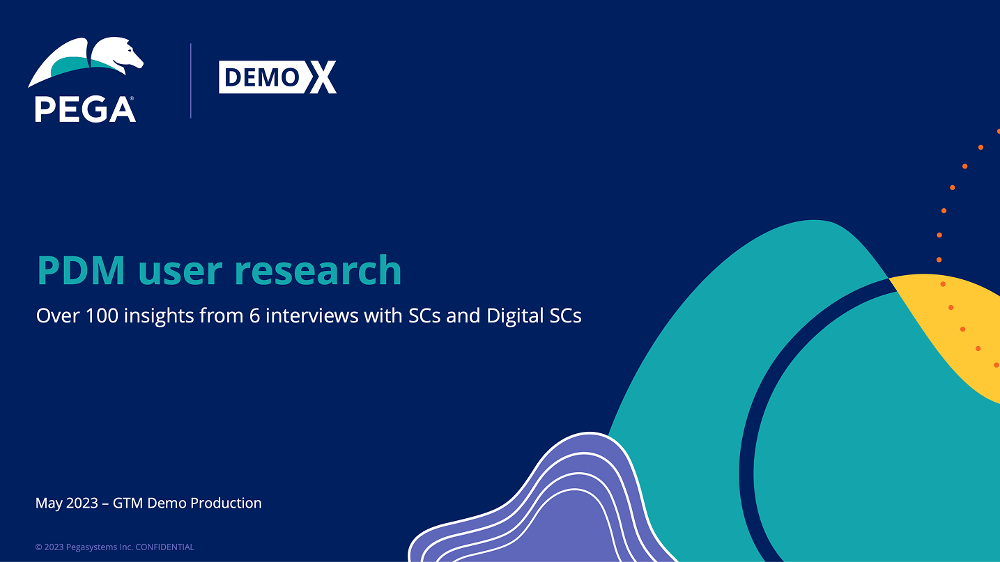
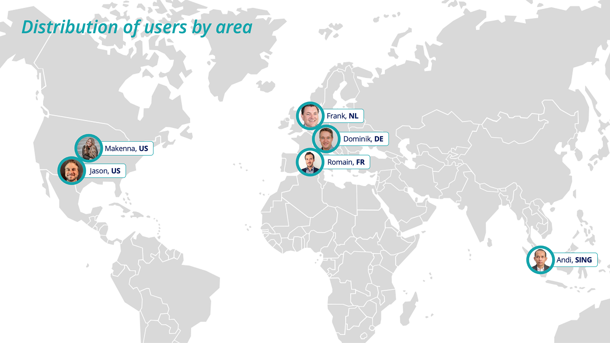
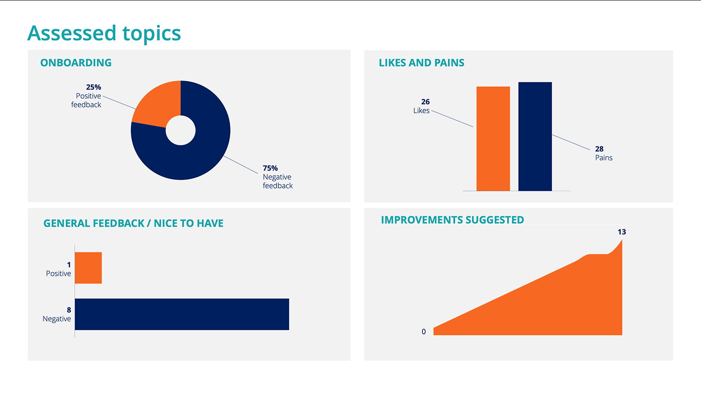
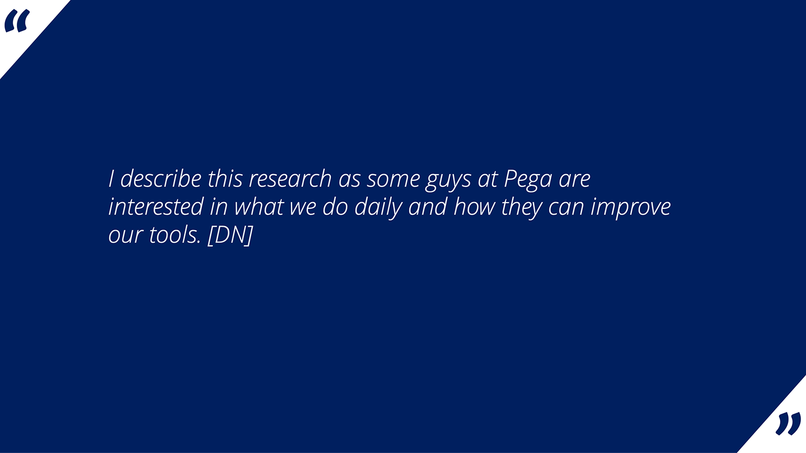
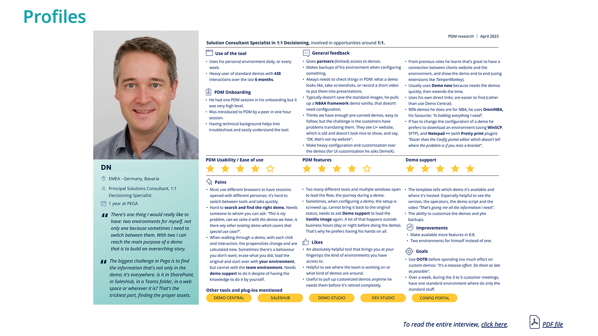
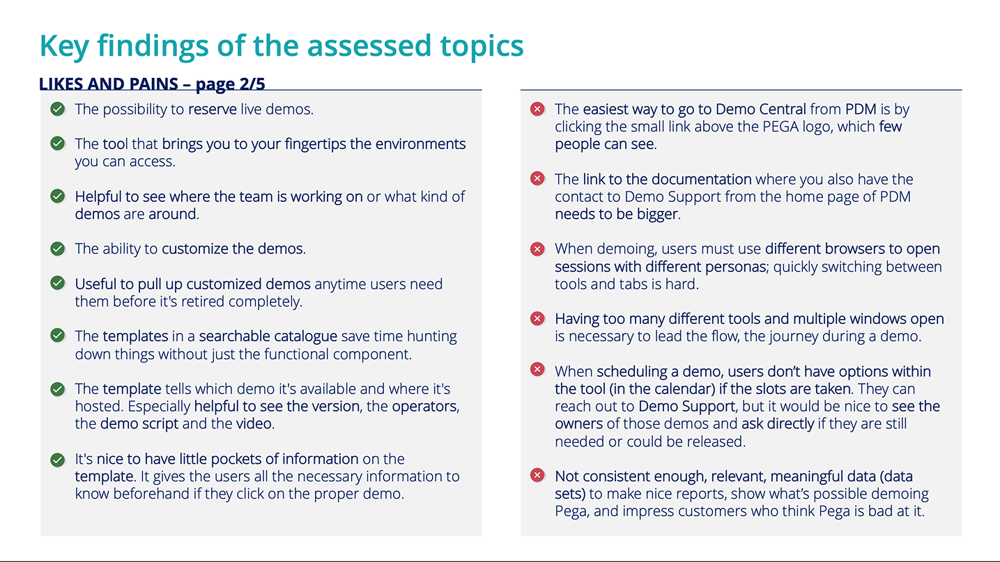
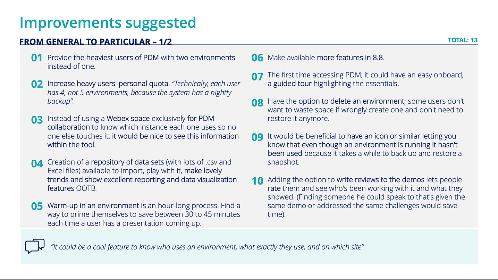

Pega · Case study
Demo Manager ResearchDemo Manager Research
DescripciónDescription
Investigación cualitativa con usuarios intensivos de Pega Demo Manager para comprender cómo preparan y presentan demos en vivo.Qualitative research with frequent Pega Demo Manager users to understand how they prepare and deliver live demos.
Definición del problemaProblem statement
Era necesario comprender sus expectativas, dificultades y necesidades para orientar mejoras de usabilidad y nuevas funcionalidades que ahorrasen tiempo.Their expectations, pain points, and needs had to be understood to guide usability improvements and time-saving features.
Qué creéWhat I created
Una investigación cualitativa, perfiles de usuarios reales y una presentación de resultados con hallazgos y propuestas de mejora.Qualitative research, real-user profiles, and a results presentation with findings and suggested improvements.
Aprendizajes claveKey learnings
- El onboarding era el momento más débil: el 75% del feedback era negativo, incluso entre usuarios experimentados. Una experiencia guiada de primer uso fue la mejora más solicitada.Onboarding was the weakest moment: 75% of the feedback was negative, even from experienced users. A guided first-time experience was the most requested fix.
- Las plantillas ahorraban tiempo, pero gracias a los pequeños detalles (versión, guion y hosting). La usabilidad se deterioraba cuando la demo estaba en marcha, repartida entre demasiadas pestañas y herramientas.Templates saved time, but only because of the small details (version, script, hosting). Usability broke down once the demo was running, across too many tabs and tools.
- La preparación del entorno podía costar hasta una hora por demo. Saber cuándo estaba listo y quién más lo utilizaba importaba más que añadir funcionalidades.Warm-up cost users up to an hour per demo. Knowing when an environment is ready, and who else is using it, mattered more than new features.
- Los usuarios intensivos necesitan un producto distinto al de los ocasionales: más entornos, cuotas mayores y la opción de limpiar los recursos.Heavy users need a different product than casual ones: more environments, bigger quotas, and the option to clean up.






